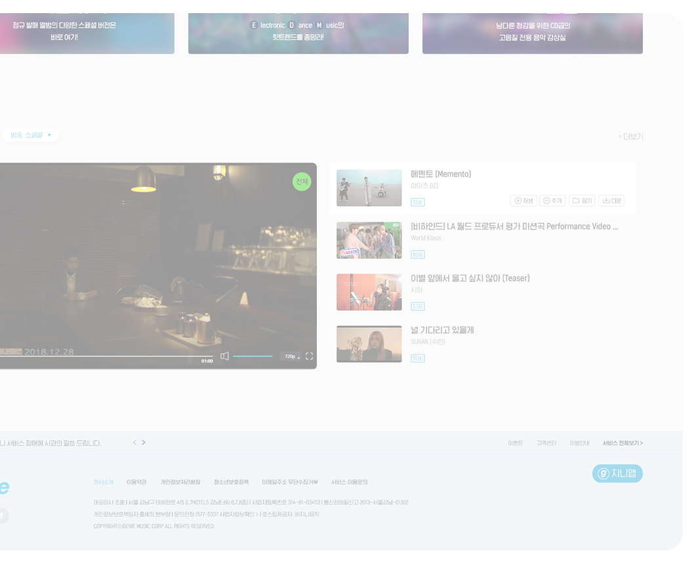
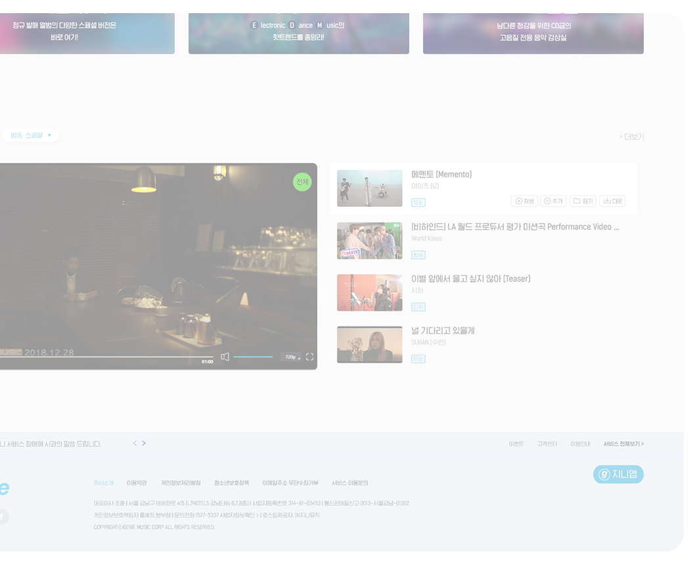

UI.UX MUSIC SITE RENEWAL


| PERIOD | 2020.03 |
| WORK | 개인작업 100% |
| TOOL | Photoshop, Illustrator |
Web Site design
GENIE CONCEPT
단순함1
하는데 집중하였다.
단순함2
하는데 집중하였다.
단순함3
하는데 집중하였다.
단순함4
하는데 집중하였다.
단순함5
하는데 집중하였다.
단순함6
하는데 집중하였다.
| AS IS | 기존의 지니뮤직 사이트는 단순하고 많은 컨텐츠가 구성되어 있지 않은 모습이다.기존의 지니뮤직 사이트는 단순하고 많은 컨텐츠가 구성되어 있지 않은 모습이다. 이 부분을 중점 |
| TO BE | 기존의 지니뮤직 사이트는 단순하고 많은 컨텐츠가 구성되어 있지 않은 모습이다.기존의 지니뮤직 사이트는 단순하고 많은 컨텐츠가 구성되어 있지 않은 모습이다. 이 부분을 중점 |
STYLE GUIDE
FONT
WEIGHT
| 20g | 40g | 60g | 80g |
| 가a | 가a | 가a | 가a |
COLOR
SYSTEM
MAIN PAGE
기존의 지니뮤직 사이트는 단순하고 많은 컨텐츠가 구성되어 있지 않은 모습이다.기존의 지니뮤직 사이트는 단순하고 많은 컨텐츠가 구성되어 있지 않은 모습이다. 이 부분을 중점
다양한 컨텐츠를 구성하고 감성적인 이미지를 많이 활용하고 보여줌으로써 소비자들의 호기심을 자아내고자 하는데 집중하였다.이 부분을 중점으로 개선하고자 하여 다양한 컨텐츠를 구성하고 감성
메뉴 바
지니뮤직 현 시점의 가장 이슈적인
이벤트를 모아 배너형으로 구성
실시간 차트
주마다 카테고리를 선택하여
인기순위를 나열하여 소비자가
원하는 바를 직관적으로
이해할 수 있도록 함
메인비주얼
주마다 카테고리를 선택하여
인기순위를 나열하여 소비자가
원하는 바를 직관적으로
이해할 수 있도록 함
주간 TOP 100
주마다 카테고리를 선택하여
인기순위를 나열하여 소비자가
원하는 바를 직관적으로
이해할 수 있도록 함
최신 앨범
카테고리별 최신앨범을
나열하여 소비자가 원하는 바를
직관적으로 볼 수 있음
스타실시간
관심있는 스타들의 실시간현황을
공유함으로써 소통을 할 수 있고
더불어 앨범홍보효과도 기대할 수
있음
서비스 바로가기
지니뮤직의 각종서비스를
소개하는 배너구역
지니 TV
지니뮤직과 관련된 방송 또는
앨범 뮤직비디오를 볼 수 있는
공간
푸터
공지사항과 소비자가 필요로
할 수 있는 회사의 정보들을
찾아볼 수 있는 구역
지니앱
공지사항과 소비자가 필요로
할 수 있는 회사의 정보들을
찾아볼 수 있는 구역
MAIN PAGE DETAIL
기존의 지니뮤직 사이트는 단순하고 많은 컨텐츠가 구성되어 있지 않은 모습이다.기존의 지니뮤직 사이트는 단순하고 많은 컨텐츠가 구성되어 있지 않은 모습이다. 이 부분을 중점
다양한 컨텐츠를 구성하고 감성적인 이미지를 많이 활용하고 보여줌으로써 소비자들의 호기심을 자아내고자 하는데 집중하였다.이 부분을 중점으로 개선하고자 하여 다양한 컨텐츠를 구성하고 감성
 

검색 바
공지사항과 소비자가 필요로 할 수 있는
회사의 정보들을 찾아볼 수 있는 구역
기타 서비스
공지사항과 소비자가 필요로 할 수 있는
회사의 정보들을 찾아볼 수 있는 구역
메뉴 바
공지사항과 소비자가 필요로 할 수 있는
회사의 정보들을 찾아볼 수 있는 구역
실시간 차트
공지사항과 소비자가 필요로 할 수 있는
회사의 정보들을 찾아볼 수 있는 구역
메인 배너
공지사항과 소비자가 필요로 할 수 있는
회사의 정보들을 찾아볼 수 있는 구역
주간 TOP 100
공지사항과 소비자가 필요로 할 수 있는
회사의 정보들을 찾아볼 수 있는 구역
지니 TV
공지사항과 소비자가 필요로 할 수 있는
회사의 정보들을 찾아볼 수 있는 구역
PLAYER DESIGN
기존의 지니뮤직 사이트는 단순하고 많은 컨텐츠가 구성되어 있지 않은 모습이다.기존의 지니뮤직 사이트는 단순하고 많은 컨텐츠가 구성되어 있지 않은 모습이다. 이 부분을 중점
다양한 컨텐츠를 구성하고 감성적인 이미지를 많이 활용하고 보여줌으로써 소비자들의 호기심을 자아내고자 하는데 집중하였다.이 부분을 중점으로 개선하고자 하여 다양한 컨텐츠를 구성하고 감성
메뉴 바
공지사항과 소비자가 필요로 할 수 있는
회사의 정보들을 찾아볼 수 있는 구역
앨범 정보
공지사항과 소비자가 필요로 할 수 있는
회사의 정보들을 찾아볼 수 있는 구역
수록곡
공지사항과 소비자가 필요로 할 수 있는
회사의 정보들을 찾아볼 수 있는 구역
뮤직비디오
공지사항과 소비자가 필요로 할 수 있는
회사의 정보들을 찾아볼 수 있는 구역
앨범소개
공지사항과 소비자가 필요로 할 수 있는
회사의 정보들을 찾아볼 수 있는 구역
이 아티스트의 다른앨범 더보기
공지사항과 소비자가 필요로 할 수 있는
회사의 정보들을 찾아볼 수 있는 구역
댓글
공지사항과 소비자가 필요로 할 수 있는
회사의 정보들을 찾아볼 수 있는 구역